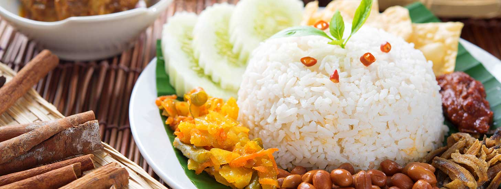

Vlak naast stadion De Kuip, Rotterdam
Onbeperkt Maleisisch buffet. Zonder tijdslimiet.
Een warm-, wok- en grillbuffet met daging rendang, sambal goreng udang, satay en nog veel meer. Voor een vaste prijs eet u zoveel u wilt, zo lang u wilt. Liever à la carte? Ook dat kan.
- € 27 per volwassene, doordeweeks
- 17:00 start van het buffet

Kerstbuffet 25 en 26 decemberHet buffet
Bij het lopend buffet eet u voor een vaste prijs zoveel u maar wilt, zonder tijdslimiet. De Maleisische keuken is een mengelmoes van de Chinese, Maleisische en Indiase keuken, met zoete, zure, hete en bittere smaken.
Let op: het buffet begint om 17:00 uur.
| Wie | Doordeweeks t/m donderdag | Weekend vrijdag t/m zondag |
|---|---|---|
| Volwassenen | € 27,00 | € 29,00 |
| Kinderen 4 t/m 11 jaar | € 15,00 | € 16,00 |
| 65+ | € 25,00 | € 27,00 |
Prijzen per persoon, exclusief consumpties. Op feestdagen geldt het weekendtarief, met uitzondering van de kerstdagen.
Een greep uit het buffet
Een klein stuk uit ons assortiment, naast diverse voorgerechtjes, soorten vlees en vis, groentes en sauzen.
Maleisische dranken
Voor een fris en tropisch gevoel: Cendol, Es Kachang en meer.
Desserts
Onder andere Es Goreng, de Es Mount Fuji en Tapiocacake.
Cocktails
Anak Kampong, Hang Tuah, Mat Salleh, Sultan Malacca en nog veel meer.
We hebben een speciale drank-, dessert- en cocktailkaart. Vraag ernaar in het restaurant.
Met een groep van 20 personen of meer?
Dan hebben we speciale groepsarrangementen, zoals het ALL-IN arrangement met onbeperkt eten en onbeperkt drinken. Vraag naar de verschillende mogelijkheden.
25 en 26 december
Verrukkelijk Kerstbuffet
Ook dit jaar kunt u bij ons weer genieten van een verrukkelijk Kerstbuffet: ons uitgebreide Maleisische buffet met Wok & Grill. Onze chef-kok bereidt tijdens de feestelijke kerstdagen speciale culinaire gerechten voor u.
Twee zittingen
- 1e zitting 16:30 - 19:30 uur
- 2e zitting 19:30 - 22:30 uur
Tarieven
- Volwassenen € 42,50 p.p.
- 4 t/m 11 jaar € 23,50 p.p.
- 1 t/m 3 jaar € 9,50 p.p.
Prijzen exclusief dranken.
Op 31 december zijn we gesloten. Op 1 januari zijn we geopend.
Fastfood Corner
Naast het restaurant hebben we de Kampong Kita Fastfood Corner, met een eigen interieur. Voor een snelle maar lekkere maaltijd: een niet te uitgebreid assortiment zorgt voor snelle service.
Warme belegde broodjes
- Kip Kerry
- Maleisisch rundvlees
- Cha Siew
- Garnalen boontjes
- Kipsate
- Pittig gehaktbal
- Bakeljauw
- Pittig ei
Wok To Go
- Kip Kerry
- Maleisisch rundvlees
- Garnalen boontjes
- Cha Siew
- Kipsate
- Pittig gehaktbal
- Kippenpoot (groot)
- Tjap Tjoy Kip
Snacks
- Frites
- Frikandel
- Kroket
- Kaassoufflé
- Kiploempia
- Kipcorn
- Nasi- en bamihappen
- Kipsate
- Gehaktbal
- Mini loempia’s
- Risolles
- Kip pastei
- Bapao
- Kroepuk
- Cassava
- Atjar ketimun
Drankjes
- Coca-Cola
- 7-Up
- Fanta
- Fernandes rood, geel, blauw en groen
- Red Bull
- Cendol
Afhalen
Liever thuis eten? Alle gerechten zijn ook af te halen. Meld u bij de balie voor uw bestelling, dan staat uw gerecht à la minute voor u klaar.

Catering: een rijsttafel bij u thuis of op het werk
Heeft u wat te vieren, thuis of op uw bedrijf? Wij verzorgen het hele eten, met een uitgebreide Maleisische rijsttafel.
Samen met u bepalen we hoe de rijsttafel eruit moet zien. U kunt ook zelf uw rijsttafel samenstellen uit onze uitgebreide menukaart; we passen hem aan uw wensen aan.
- € 17,50 - € 24,50per persoon, afhankelijk van wat u samenstelt
- 20 personenminimaal
Vragen? Bel ons, of kom even langs in het restaurant.
Bel over cateringKampong Kita betekent ‘ons dorp’
Bij ons eet u allerlei plaatselijke gerechten, net als de dorpelingen in Maleisië. Ook het interieur is daarop aangepast, zodat u de sfeer krijgt alsof u in Maleisië bent.
Op 18 januari 2008 openden we de deuren. Sindsdien is Kampong Kita een begrip geworden in Feijenoord. Of u nu naar de film, de bowlingbaan of een voetbalwedstrijd gaat: een gezellig diner bij Kampong Kita hoort erbij.
Komt u met een groot gezelschap of gezellig met z’n tweeën, we hebben ruimte voor iedereen. Ook voor bruiloften, personeelsuitjes, verjaardagen en afscheidsfeesten kunt u bij ons reserveren.
- 2008open sinds 18 januari
- 200+zitplaatsen
- Pgenoeg parkeergelegenheid voor de deur
Reserveren & contact
Reserveren kan uitsluitend telefonisch, via 010 - 479 36 33. Voor overige vragen kunt u ons mailen.
Openingstijden
- Maandag
- tijdelijk gesloten
- Dinsdag t/m donderdag
- 12:00 - 22:00 uur
- Vrijdag t/m zondag
- 12:00 - 22:00 uur
Het buffet begint om 17:00 uur. Ook geopend op feestdagen.
Adres en gegevens
Cor Kieboomplein 508
3077 MK Rotterdam
Telefoon 010 - 479 36 33
Fax 010 - 479 00 89
info@kampongkita.nl
Betalen
We accepteren alleen pin en contant, geen creditcards. Daarnaast accepteren we alleen de fysieke VVV Dinercheque en Dinercadeau-kaart, geen uitgeprinte versie met barcode.